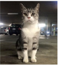

Campus Cats Coalition
Campus Cats Coalition
Campus Cats Coalition
Who we are and what we do The Campus Cat Coalition at UNSW Sydney was formed in 2001 to provide a humane pro-gram of neutering, vaccination and feeding of campus cats and adop-tion of tame cats and kittens, as a viable alternative to euthanasia.
Campus Cat Coalition The Campus Cat Coalition (CCC) at the Kensington campus of UNSW Sydney is a group dedicat-ed to controlling and caring for the free-living cat population on UNSW property. The CCC com-prises UNSW staff and students, and community volunteers. In 2008 the university approved a trial Cat Management Program to be implemented by the CCC and monitored by the university. The program has been reviewed and re-newed since then on an annual basis. Cats and kittens are humane-ly trapped, neutered, vaccinated and either rehomed/adopted or re-leased back in to their campus ter-ritory where they are regularly fed and monitored by CCC volun-teers. Wherever possible, kittens and any unclaimed tame strays are boarded or fostered and found homes. No cats are euthanased, except when necessary to relieve suffering. As at the beginning of 2018, all of the campus cats have been neutered. And the total number of cats on campus has steadily decreased since 2012.
Account book:
We can share the accont book to public that people will excatly know where does their money go.
Download link Here
Why This Program?Studies have proved that this trap/-neuter/return (TNR) method of control is the most successful method of stabilising, maintaining and eventually reducing healthy free-living cat colony populations.
TNR is the most cost-effectivemethod. To trap and euthanase is avery expensive and relatively un-successful approach to managingcat numbers. It creates a space formore undesexed cats to fill and sothe cycle continues with furtherbreeding and unwanted animals.
Feeders get to know their cats so newcomers are easily identified and can be trapped, neutered, vac-cinated and either rehomed or re-turned to the campus. Where pos-sible tame strays are returned to their owners.
It helps keep human eating and recreation areas free of rodent in-festation.
It addresses the problem of home-less cats responsibly, effectively and humanely. Many abandoned cats die from starvation, disease or abuse. Cared-for outdoor cats can be happy and healthy, and when they learn to trust people, they also learn to be friendly!The UNSW TNR paper – co-au-thored by Helen Swarbrick, Presi-dent of Campus Cats NSW The UNSW TNR paper co-au-thored by Helen Swarbrick has been published in Animals - Jour-nal of Animal Science and Animal Welfare::
“Application of a Protocol Based on Trap-Neuter- Return (TNR) to Manage Unowned Urban Cats on an Australian University Campus”, Animals (ISSN 2076-2615)
http://www.md-pi.com/2076-2615/8/5/77
Contect infomation
Contect us
Email: unswcampuscats@yahoo.com
Sending massage HERE
Address:
Campus Cats NSW PO Box 6315 UNSW Sydney NSW 1466 AUSTRALIA